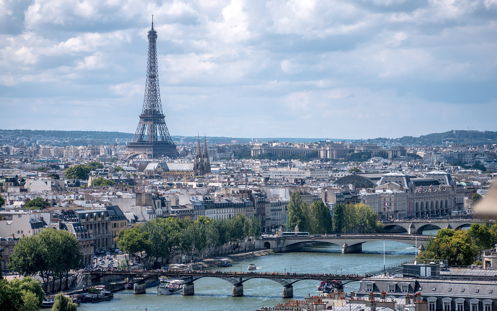
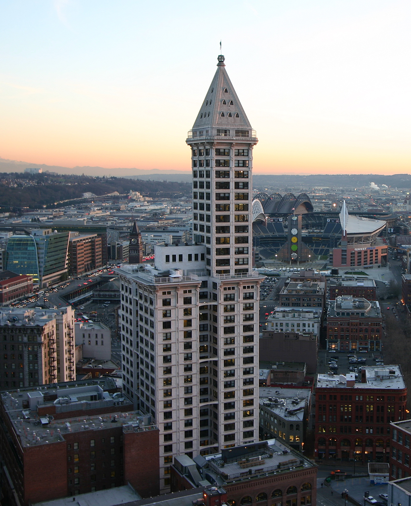
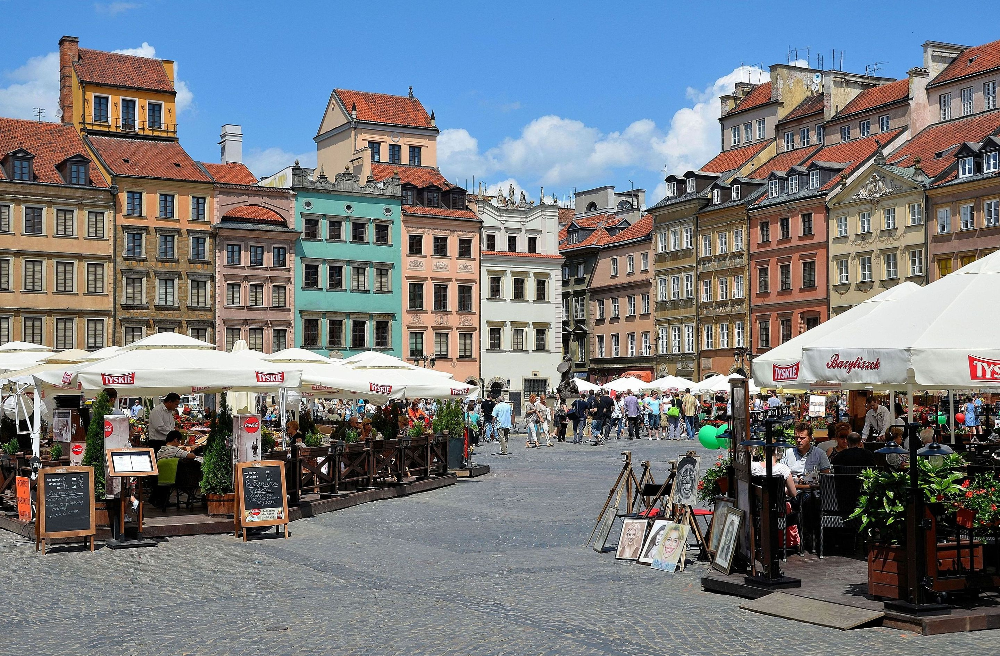

- Paris, France 
- Seattle, Washington, USA 
- Warsaw, Poland 
Paris, France's capital, is a major European city and a global center for art, fashion, gastronomy and culture. Its 19th-century cityscape is crisscrossed by wide boulevards and the River Seine. Beyond such landmarks as the Eiffel Tower and the 12th-century, Gothic Notre-Dame cathedral, the city is known for its cafe culture and designer boutiques along the Rue du Faubourg Saint-Honoré.
https://www.cometoparis.com/paris-guide/what-to-do-in-paris-s938
Seattle, a city on Puget Sound in the Pacific Northwest, is surrounded by water, mountains and evergreen forests, and contains thousands of acres of parkland. Washington State’s largest city, it’s home to a large tech industry, with Microsoft and Amazon headquartered in its metropolitan area. The futuristic Space Needle, a 1962 World’s Fair legacy, is its most iconic landmark.
https://visitseattle.org/things-to-do/sightseeing/top-25-attractions/
https://www.tripadvisor.com/Attractions-g274856-Activities-Warsaw_Mazovia_Province_Central_Poland.html